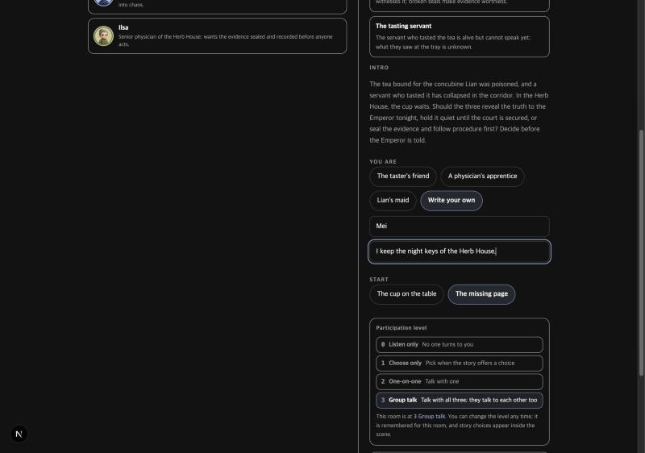

Inkpod
말하면 대답하는 인터랙티브 오디오 스토리입니다. AI 캐릭터와 목소리로 대화하며 이야기가 진행됩니다. 저는 음악·효과음·목소리 선정과 출시 마케팅을 맡았습니다.
제가 한 일
- 출시 홍보: 6개 채널에 짧은 영상을 올리고, 채널마다 다른 추적 링크로 유입을 쟀습니다. 46명이 들어와 1명이 끝까지 플레이했습니다.
- 사운드: 이야기마다 음악·효과음·목소리를 골랐습니다.
- 지금: 여러 캐릭터가 한 "방"에 함께 나오고 실시간 음성으로 대화하는 제 버전을 따로 만들고 있습니다. 다음은 사용자 테스트입니다.
화면

